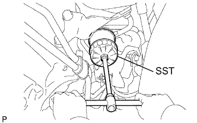

МАСЛО И МАСЛЯНЫЙ ФИЛЬТР > ЗАМЕНА |
| 1. СНИМИТЕ УПЛОТНЕНИЕ НИЖНЕЙ КРЫШКИ ДВИГАТЕЛЯ |
Выверните 2 болта и снимите уплотнение нижней крышки двигателя.
| 2. СЛЕЙТЕ МОТОРНОЕ МАСЛО |
Снимите крышку маслоналивной горловины.
Снимите пробку сливного отверстия масляного поддона и прокладку, и слейте масло в емкость.
| 3. СНИМИТЕ ЗАДНЮЮ НИЖНЮЮ КРЫШКУ ДВИГАТЕЛЯ В СБОРЕ |
Выверните 4 болта и снимите заднюю защиту картера двигателя.
| 4. СНИМИТЕ МАСЛЯНЫЙ ФИЛЬТР В СБОРЕ |
|  |
Снимите масляный фильтр с помощью SST.
| 5. УСТАНОВИТЕ МАСЛЯНЫЙ ФИЛЬТР В СБОРЕ |
Проверьте и очистите установочную поверхность масляного фильтра.
Нанесите чистое моторное масло на прокладку нового масляного фильтра.
 |
Навинтите маслянный фильтр на место вручную. Затяните его так,чтобы уплотнение прилегало к посадочной поверхности.
Затяните масляный фильтр с помощью SST.
В зависимости от места проведения работ выберите следующее.
Если есть достаточно места, затяните масляный фильтр с помощью динамометрического ключа.
| 6. ЗАЛЕЙТЕ МОТОРНОЕ МАСЛО |
Очистите и установите пробку для слива масла с новой прокладкой.
Добавьте свежее моторное масло.
| Класс масла по степени вязкости | Вязкость масла (SAE) |
| Универсальное моторное масло API сорт SL "Energy-Conserving", SM "Energy-Conserving" или ILSAC. |
|
| Универсальное моторное масло API сорт SL или SM |
|
| Наименование | Заданные условия |
| Слив и заполнение без замены масляного фильтра | 5,0 литра (5,3 кварты США, 4,4 английской кварты) |
| Слив и заполнение с заменой масляного фильтра | 5,7 литра (6,0 кварты США, 5,0 английской кварты) |
| Заполнение сухой системы | 6,1 литра (6,4 кварты США, 5,4 английской кварты) |
Установите крышку маслоналивной горловины.
| 7. ПРОВЕРЬТЕ, НЕТ ЛИ УТЕЧЕК МАСЛА |
Запустите двигатель. Убедитесь, что в узлах, в которых выполнялись работы, нет утечек масла.
| 8. ПРОВЕРЬТЕ УРОВЕНЬ МОТОРНОГО МАСЛА |
Прогрейте двигатель, затем остановите его и подождите 5 минут.
Убедитесь, что уровень масла находится между отметками низкого и максимального уровней на щупе проверки уровня масла.
Если уровень масла находится на низком уровне, убедитесь в отсутствии утечек моторного масла и долейте масло до максимальной отметки.
| 9. УСТАНОВИТЕ ЗАДНЮЮ ЗАЩИТУ КАРТЕРА ДВИГАТЕЛЯ В СБОРЕ |
Установите заднюю защиту картера двигателя и закрепите ее 4 болтами.
| 10. УСТАНОВИТЕ УПЛОТНЕНИЕ НИЖНЕЙ КРЫШКИ ДВИГАТЕЛЯ |
Установите уплотнение нижней крышки двигателя и закрепите его 2 болтами.